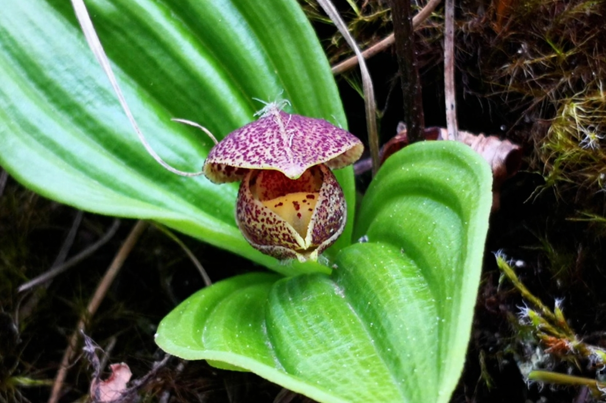

📇
基础名片
Basic Info
玉龙杓兰
学名：Cypripedium forrestii
科属：兰科杓兰属
保护级别：极危（CR）、国家重点二级保护野生植物
学名：Cypripedium forrestii
科属：兰科杓兰属
保护级别：极危（CR）、国家重点二级保护野生植物
🌿
形态特征
Morphology
形态特征
植株：高3-5厘米，具细长而横走的根状茎；
茎：茎直立，长1.5-3厘米，包藏于2枚圆锥形的鞘之内，顶端具2枚叶；
叶：叶近对生，平展或近铺地；叶片椭圆形或椭圆状卵形，长5-6.5厘米，宽2.5-3.6厘米，先端具短尖头，上面绿色，有较多的黑色斑点；
花：花序顶生，仅具1花；花暗黄色，带栗色细斑点，唇瓣呈典型囊状（杓兰标志性特征）；无花苞片;
果/种子：蒴果，种子细小如粉尘，需与真菌共生才能萌发，自然萌发率极低;
植株：高3-5厘米，具细长而横走的根状茎；
茎：茎直立，长1.5-3厘米，包藏于2枚圆锥形的鞘之内，顶端具2枚叶；
叶：叶近对生，平展或近铺地；叶片椭圆形或椭圆状卵形，长5-6.5厘米，宽2.5-3.6厘米，先端具短尖头，上面绿色，有较多的黑色斑点；
花：花序顶生，仅具1花；花暗黄色，带栗色细斑点，唇瓣呈典型囊状（杓兰标志性特征）；无花苞片;
果/种子：蒴果，种子细小如粉尘，需与真菌共生才能萌发，自然萌发率极低;
🌱
生长环境
Habitat
生长环境
产地：云南西北部（丽江玉龙雪山、香格里拉/中甸）；
特有：极小种群野生植物，分布范围极狭窄，属于区域特有类群；
生境：海拔 3400–3500米 的半阴坡松林下、灌木丛生坡地或开旷林地；
海拔：3400–3500m；
物候：花期 5–6月，花两性，单生枝顶；果期稍后，依赖真菌共生完成种子萌发；
产地：云南西北部（丽江玉龙雪山、香格里拉/中甸）；
特有：极小种群野生植物，分布范围极狭窄，属于区域特有类群；
生境：海拔 3400–3500米 的半阴坡松林下、灌木丛生坡地或开旷林地；
海拔：3400–3500m；
物候：花期 5–6月，花两性，单生枝顶；果期稍后，依赖真菌共生完成种子萌发；
💊
价值作用
Value
价值作用
观赏价值:
花形奇特、色彩雅致，是极具园艺潜力的高山观赏兰科植物。
研究价值:
对研究兰科系统演化、高山植物适应机制及真菌共生关系有重要意义。
观赏价值:
花形奇特、色彩雅致，是极具园艺潜力的高山观赏兰科植物。
研究价值:
对研究兰科系统演化、高山植物适应机制及真菌共生关系有重要意义。

野生玉龙杓兰云南地区数量
野生玉龙杓兰调查发现数量变化